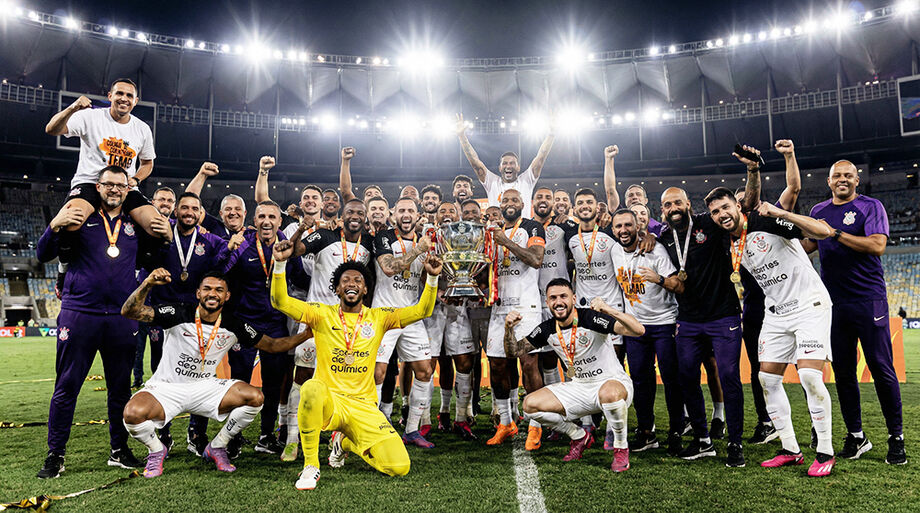

Time do Povo São Paulo
Orgulho Pertencer
O Sport Club Corinthians Paulista, fundado em 1º de setembro de 1910 no bairro do Bom Retiro, São Paulo, por um grupo de operários, é um dos clubes mais populares do Brasil, conhecido como o "Time do Povo". Inspirado no inglês Corinthian FC, o clube acumula conquistas expressivas, incluindo dois Mundiais da FIFA, uma Libertadores invicta, sete Campeonatos Brasileiros e o recorde de 30 títulos Paulistas.
